ADVS <- import(file = "./data/advs.xpt")
PR <- ADVS %>%
filter(PARAMN == 3) %>%
filter(VISITNUM > 3) %>%
mutate(StudyWeek = floor(ADY/7))5 {ggplot2} 시작하기
5.1 데이터 소스
이 프로젝트에서는 익명화된 CDISC 데이터셋을 사용하며, 여기에서 찾을 수 있습니다: https://github.com/phuse-org/phuse-scripts/tree/master/data/adam/cdisc
이 미니 프로젝트에서는 {ggplot2} 패키지를 사용하여 데이터 시각화를 생성합니다. {ggplot2}는 생성된 플롯에 주석을 달고 조작하는 데 사용할 수 있는 보조 패키지가 많기 때문에 데이터 시각화를 생성하는 데 선호하는 패키지입니다.
이 미니 프로젝트에서는 ggplot 함수를 사용하고 aes 함수를 사용하여 데이터 열이 플롯 미학에 매핑되는 방식을 정의합니다. 또한 데이터 포인트가 플롯에 표시되는 방식을 정의하는 다양한 함수(geom_point, geom_line)를 사용할 것입니다. labs 함수를 사용하면 제목, 부제, 축 레이블 등으로 플롯에 주석을 달 수 있습니다.
5.2 1. 데이터셋 생성
이 데이터셋은 교육/테스트 목적으로 생성된 CDISC의 분석 활력 징후입니다. 이 미니 프로젝트에서는 심박수 측정에 중점을 둘 것입니다. 활성 치료 기간 내의 주를 정의하는 새 변수 StudyWeek를 계산하고 있습니다.
5.3 2. 기본 ggplot 함수 사용
{ggplot2} 패키지의 기본 ggplot 명령은 점, 선, 모양 등을 배치할 빈 “캔버스”를 만듭니다.
data 인수는 플롯에 사용되는 데이터셋입니다. mapping은 데이터의 어떤 열이 플롯의 미학을 정의하는 데 사용되는지 식별하며, 이는 aes( ) 함수에 전달됩니다. 따라서 이 경우 x축은 측정의 연구일인 ADY로 정의됩니다. y축은 AVAL 열에 주어진 심박수에 대한 숫자 값입니다. 이 문장만으로는 플롯의 속성(데이터셋 및 플롯 속성에 대한 열 매핑)을 단순히 정의한다는 점에 유의하십시오.
{ggplot2}를 배우는 동안 mapping 인수를 명시적으로 사용하는 것이 좋습니다. 이렇게 하면 열 값과 플롯의 속성 간에 매핑하고 있음을 상기시켜 줍니다. 많은 사람들이 이 인수 이름을 지정하는 것을 건너뛰는 것을 볼 수 있지만, 이는 혼란을 야기하고 {ggplot2} 호출에서 무슨 일이 일어나고 있는지 배우기 어렵게 만듭니다.
ggplot(data = PR, mapping = aes(x=ADY, y=AVAL)) 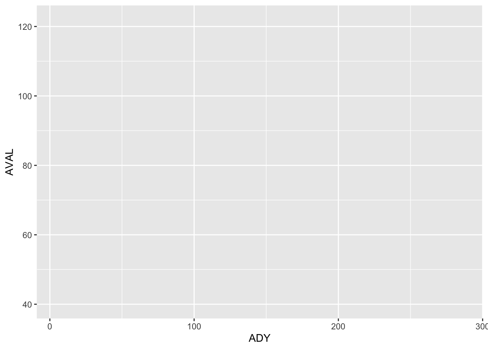
5.4 3. 이전 단계에서 만든 “캔버스”에 점 추가
산점도를 만들려면 위 문에 ’+ geom_point()’를 추가하십시오. 참고: 항상 + 기호를 줄 끝에 놓고 시작 부분에 두지 마십시오.
참고: {ggplot2} 패키지는 %>% 연산자가 등장하기 전에 만들어졌습니다. {ggplot2} 내의 + 연산자를 %>% 파이프와 유사한 것으로 볼 수 있습니다. +는 플롯에 추가 레이어를 추가합니다. Adobe Photoshop과 같은 이미지 편집 소프트웨어에 익숙하다면 Photoshop 내의 이미지가 개별적으로 편집되는 레이어로 구성될 수 있다는 것을 알 것입니다.
기본적으로 geom_ 함수는 ggplot 함수에 정의된 열 대 미적 속성을 존중하지만 반드시 그럴 필요는 없습니다. 이러한 geom_ 함수에는 필요한 경우 매핑을 재정의하거나 변경할 수 있도록 자체 mapping 인수가 있습니다.
ggplot(data = PR, mapping = aes(x=ADY, y=AVAL)) +
geom_point()Warning: Removed 3 rows containing missing values or values outside the scale range
(`geom_point()`).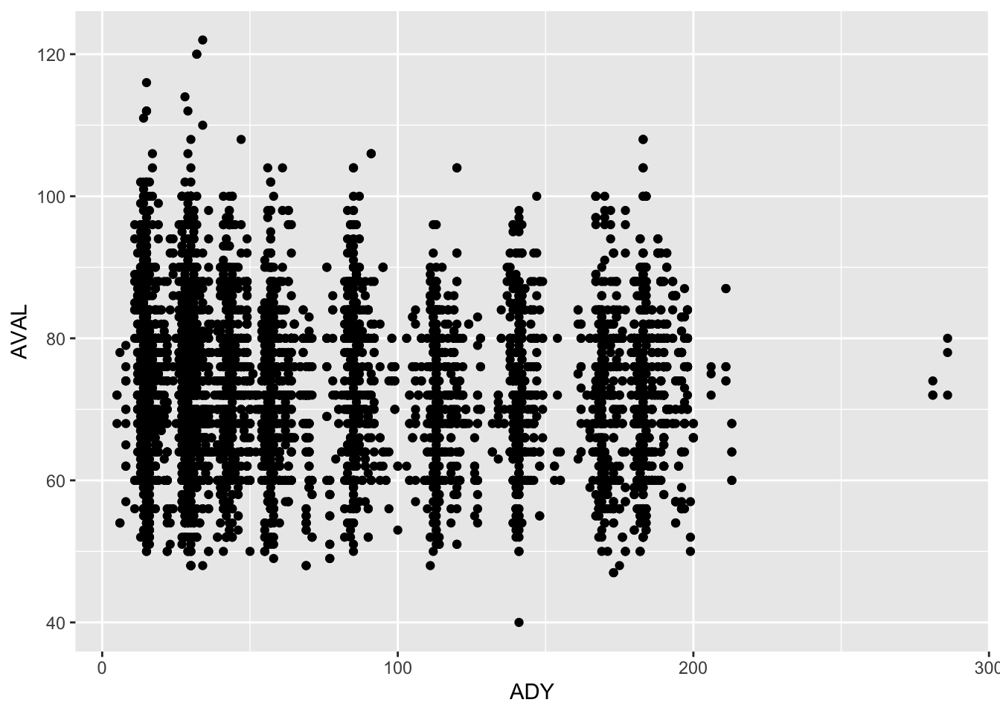
5.5 4. 데이터 그룹 식별
aes( ) 함수에는 데이터셋 내에서 그룹화/데이터 계열을 정의할 수 있는 group 인수가 있습니다. 위 플롯에서 어떤 데이터가 다른 치료군에 해당하는지 보여주는 것이 좋을 수 있습니다.
ggplot(data = PR, mapping = aes(x=ADY, y=AVAL, group = TRTA)) +
geom_point()Warning: Removed 3 rows containing missing values or values outside the scale range
(`geom_point()`).어? 아무것도 안 했는데요?
음, 네, 했습니다. 그래프에서 변화를 볼 수 없을 뿐입니다. 그래프에 들어가는 데이터에서 그룹화를 정의했습니다. 하지만 다른 색상이나 다른 모양을 보고 싶었습니까? 그렇다면 aes( ) 함수에서 이를 색상 또는 모양 속성에 매핑해야 합니다.
ggplot(data = PR, mapping = aes(x=ADY, y=AVAL, group = TRTA,
colour = TRTA, shape = TRTA)) +
geom_point()Warning: Removed 3 rows containing missing values or values outside the scale range
(`geom_point()`).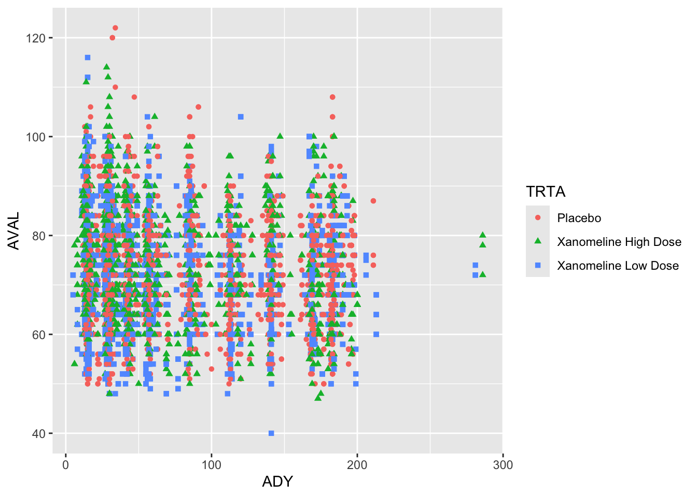
ggplot 함수에서 group 속성을 열 값에 매핑하는 것, 즉 group 변수의 모든 수준에 대해 속성을 변경하는 것은 후속 geom_ 설정이 group 변수의 각 수준에 적용된다는 것을 의미합니다.
5.6 5. 각 피험자의 데이터 계열을 식별하여 “스파게티 플롯” 생성
이 플롯은 대부분의 피험자가 같은 날에 ECG 측정을 받았지만 다른 시간에 ECG를 받은 소수의 피험자가 있음을 보여줍니다. 플롯이 보여주지 않는 것은 점이 개인별로 어떻게 그룹화되는지입니다. 즉, 각 개인은 여러 번 측정되므로 동일한 피험자의 점이 어느 것인지 어떻게 보여줄 수 있습니까?
아래 청크를 실행하기 전에 플롯이 어떻게 보일지 추측해 보십시오.
ggplot(data = PR, mapping = aes(x=ADY, y=AVAL)) +
geom_line()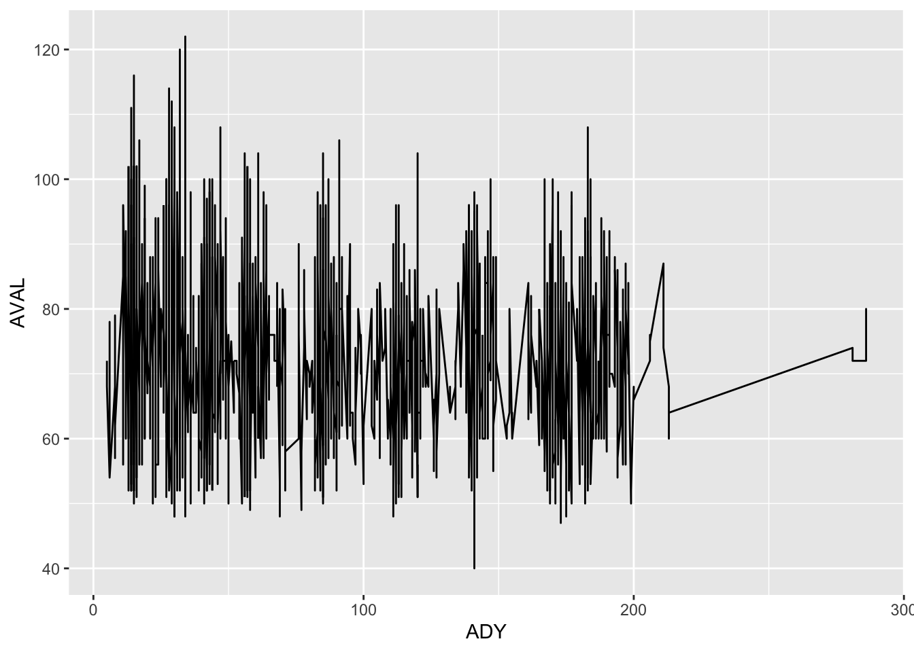
위 4단계에서는 TRTA의 각 수준에 대한 데이터를 표시하기 위해 group 매핑을 정의했습니다. 여기서 정확히 동일한 기술을 사용하여 각 피험자에 대한 데이터를 표시할 수 있습니다. 아래 aes 함수 내에 group 속성을 추가하여 각 피험자에 대한 심박수 데이터 계열을 보여주는 “스파게티 플롯”을 표시하십시오. 힌트: 환자는 USUBJID 변수를 사용하여 식별됩니다. 일반적으로 스파게티 플롯은 동일한 피험자의 관측치를 연결하는 선에 대해 한 가지 색상을 사용하므로 여기서 색상 속성을 지정할 필요가 없습니다.
plot1 <- PR %>%
ggplot(data = PR, mapping = aes(x=ADY, y=AVAL, group = )) +
geom_line()
plot1{ggplot2} 플롯을 plot1이라는 객체에 할당하고 있습니다. 이것은 좋은 생각입니다. 왜냐하면 언제든지 해당 객체를 가져와 + 연산자를 사용하고 변경하여 수정할 수 있기 때문입니다. ggplot2 플롯 객체는 + 연산자를 사용하여 모든 속성을 변경하거나 추가할 수 있습니다.
5.7 6. 레이블(제목, 축 레이블) 추가 및 플롯 테마 선택
아래 labs() 문의 텍스트를 변경하여 플롯에 대한 합리적인 제목과 축 레이블을 만드십시오.
plot2 <- plot1 +
labs(title = "Plot Title",
subtitle = "Plot subtitle",
x = "X-axis label",
y = "Y-axis label",
caption = paste("Plot created on:",Sys.Date()))
plot2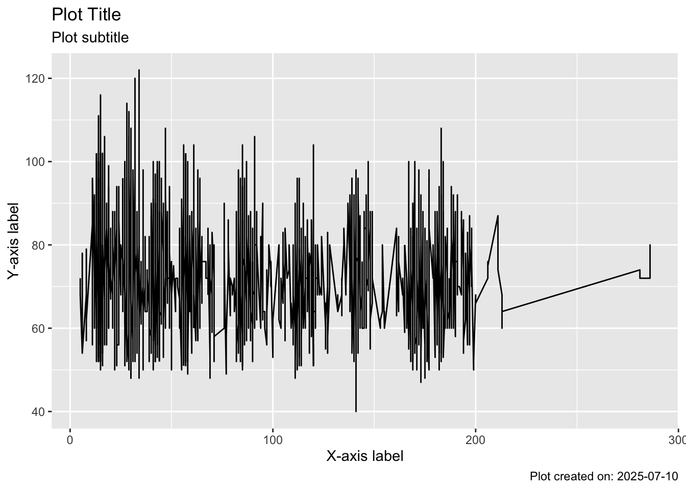
다양한 {ggplot2} 테마 중에서 플롯 테마를 선택할 수도 있습니다. 다른 테마는 {cowplot}과 같은 다양한 {ggplot2} 도우미 패키지에서 사용할 수 있습니다. theme_... 함수를 사용하여 다양한 테마를 시도하여 가장 마음에 드는 것을 확인하십시오.
plot3 <- plot2 +
theme_bw()
plot3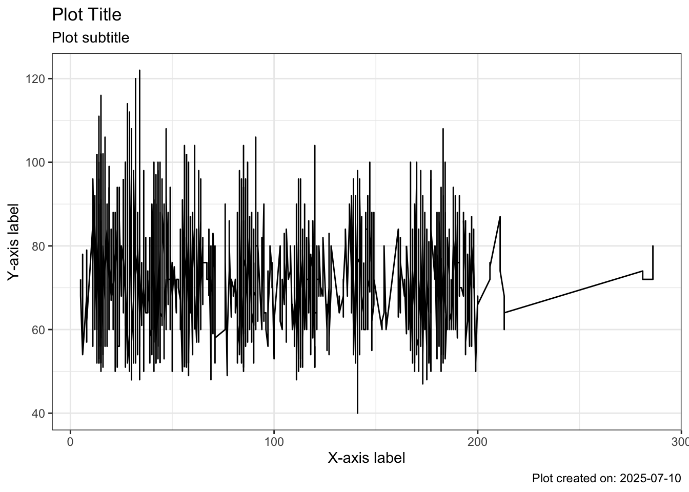
5.8 7. 치료군별 분할
다음에 하고 싶은 일은 위 플롯(시험의 모든 피험자를 보여줌)을 치료군별로 분할하는 것입니다. 이렇게 하려면 데이터 내의 변수를 사용하여 어떤 데이터가 어떤 패널에 들어갈지 정의해야 합니다. facet_ 함수를 사용하여 이 작업을 수행합니다. facet_grid는 하나 이상의 지정된 변수로 데이터를 분할하고 페이지에 플롯을 그리드로 정렬합니다. 한 변수는 행을 정의하고 (선택적으로) 다른 변수는 열을 지정합니다. facet_wrap은 하나의 변수를 가져와 해당 변수의 각 고유 값에 대해 새 플롯을 만들고 페이지를 가능한 한 많은 플롯으로 채웁니다. 이 상황에서 어느 것이 가장 잘 작동하는지 확인하기 위해 두 가지를 모두 시도해 보십시오:
plot4 <- plot3 +
facet_wrap(facets = "TRTA")
plot4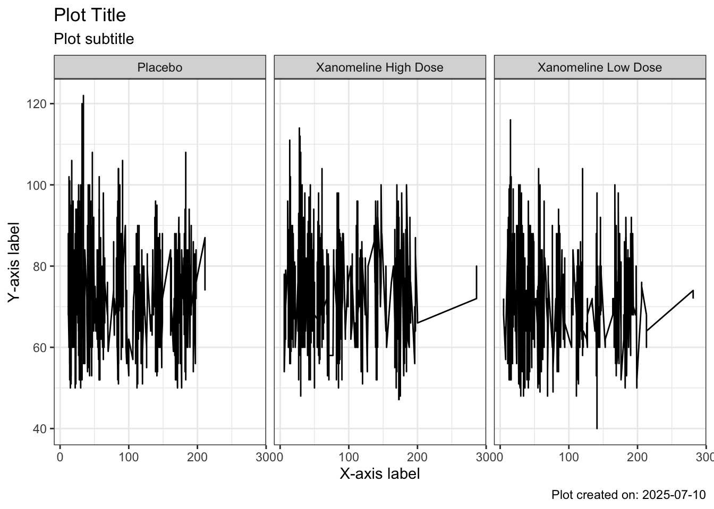
이제 방법을 알았으므로 모든 변수를 사용하여 플롯을 분할할 수 있습니다(예: SEX, PERIOD, …).
5.9 8. 플롯 저장
플롯을 저장할 준비가 되면 ggsave 함수를 사용하여 필요한 모든 형식으로 플롯을 렌더링하고 외부화할 수 있습니다. saveRDS를 사용하여 최종 플롯 객체를 저장하는 것도 좋은 생각입니다. 그러면 나중에 이 객체를 R로 읽어와 변경할 수 있습니다.
참고: 이 .rmd 파일에서 저장하는 경우 플롯 및 출력 객체는 이 .rmd 파일이 있는 곳에 저장됩니다.
plot4 #ggsave(filename = "myPlot.png", device = "png", width = 192, height = 108, units = "mm")
#saveRDS(object = plot4, file = "savedPlot.rds")5.10 9. 요약 통계 추가(예: 중앙값)
스파게티 플롯은 유용할 수 있지만 각 치료군에 대해 이것이 어떻게 변하는지 알 수 있도록 중앙값 심박수를 보여주는 것이 좋습니다.
내장된 {ggplot2} 함수 stat_summary를 사용하여 이 작업을 수행할 수 있습니다.
plot3 +
stat_summary(geom = "point", fun = median, color = "red")Warning: Removed 3 rows containing non-finite outside the scale range
(`stat_summary()`).plot3 객체에서 ggplot 함수 호출에 데이터셋의 USUBJID에 매핑된 그룹화 속성이 있습니다. 이 group 미학을 지정함으로써 R에게 모든 geom_ 및 stat_ 함수가 동일한 그룹화를 사용해야 한다고 말하는 것입니다. 따라서 stat_summary는 각 시점에서 모든 피험자에 대한 중앙값을 표시하려고 시도합니다. 이는 시점당 피험자당 관측치가 하나뿐이므로 실제로 원하는 것이 아닐 것입니다.
그렇다면 모든 피험자에 대해 계산된 중앙값을 보여주는 것으로 어떻게 돌아갈 수 있습니까?
plot3 +
stat_summary(mapping = aes(group = NULL), fun = median, colour = "red")Warning: Removed 3 rows containing non-finite outside the scale range
(`stat_summary()`).Warning: Removed 175 rows containing missing values or values outside the scale range
(`geom_segment()`).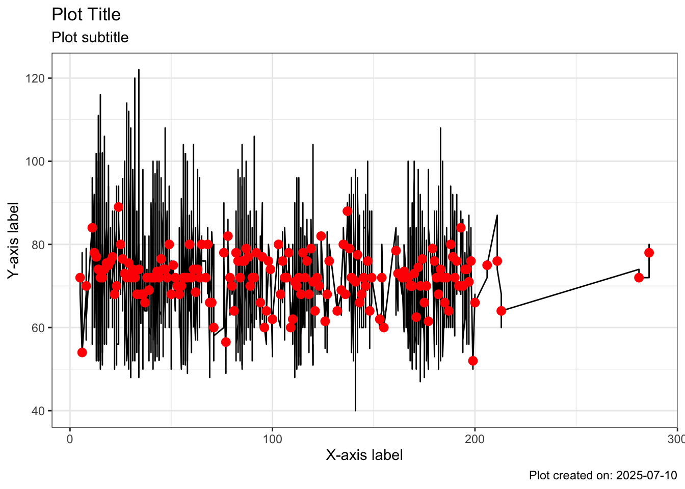
모든 피험자가 치료 기간의 같은 날에 활력 징후를 평가받은 것은 아닙니다. 위와 동일한 플롯을 보되 계산된 변수 StudyWeek를 사용해 보겠습니다.
ggplot(data = PR, mapping = aes(x=StudyWeek, y=AVAL)) +
geom_point()Warning: Removed 3 rows containing missing values or values outside the scale range
(`geom_point()`).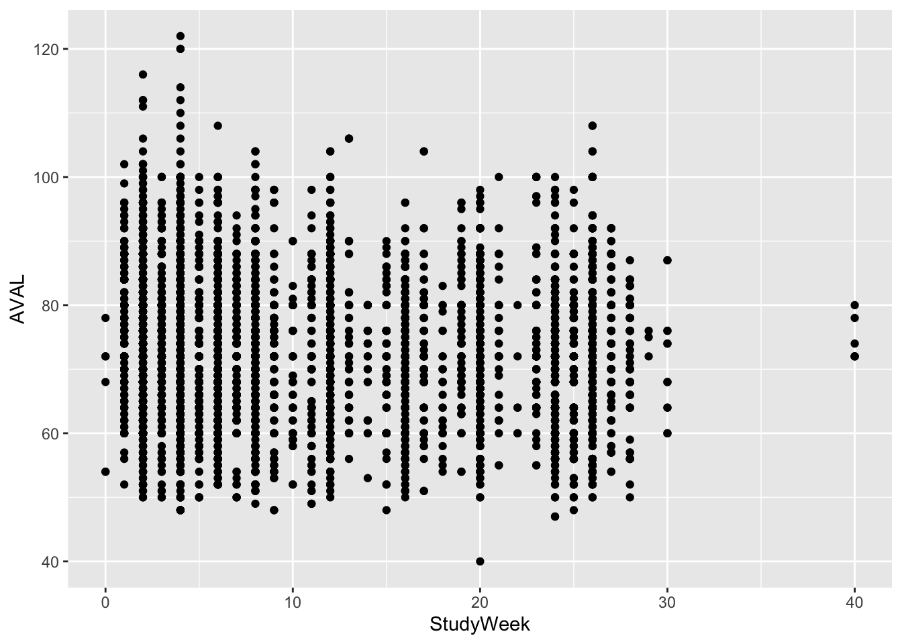
피험자는 0-30주 사이에 측정을 받았고 몇몇 개인은 40주에 측정을 받았습니다. stat_summary 함수를 적용하기 전에 0, 5, 10, 15, 20, 25, 30주로 필터링해 보겠습니다:
dataWeeks <- PR %>%
filter(StudyWeek %in% c(0, 5, 10, 15, 20, 25, 30)) %>%
mutate(ADY = StudyWeek * 7)
dataWeeks %>%
ggplot(mapping = aes(x = StudyWeek, y = AVAL)) +
stat_summary(mapping = aes(group = NULL),
fun = median,
colour = "red")Warning: Removed 1 row containing non-finite outside the scale range
(`stat_summary()`).Warning: Removed 7 rows containing missing values or values outside the scale range
(`geom_segment()`).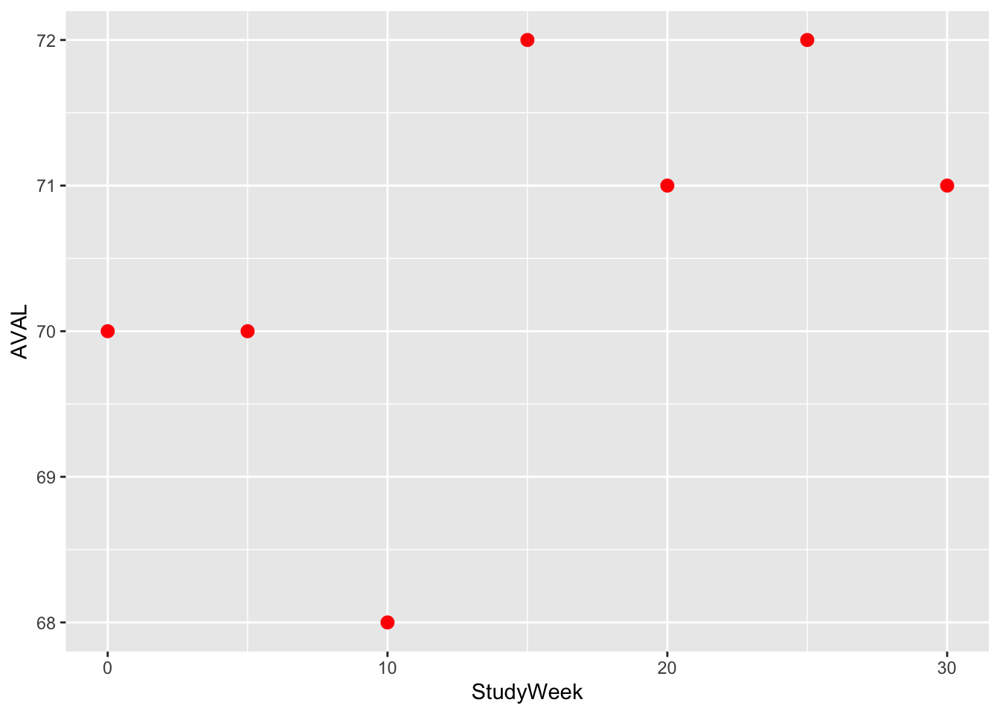
이제 이러한 중앙값을 위 스파게티 플롯에 중첩하고 싶을 수 있습니다. 그러나 StudyWeek 변수는 동일한 x축 눈금에 플롯될 수 있도록 “일”을 표시하도록 다시 조정해야 한다는 점에 유의하십시오.
plot3 +
stat_summary(data = dataWeeks,
mapping = aes(x = ADY,
group = NULL),
fun = median,
colour = "red")Warning: Removed 1 row containing non-finite outside the scale range
(`stat_summary()`).Warning: Removed 7 rows containing missing values or values outside the scale range
(`geom_segment()`).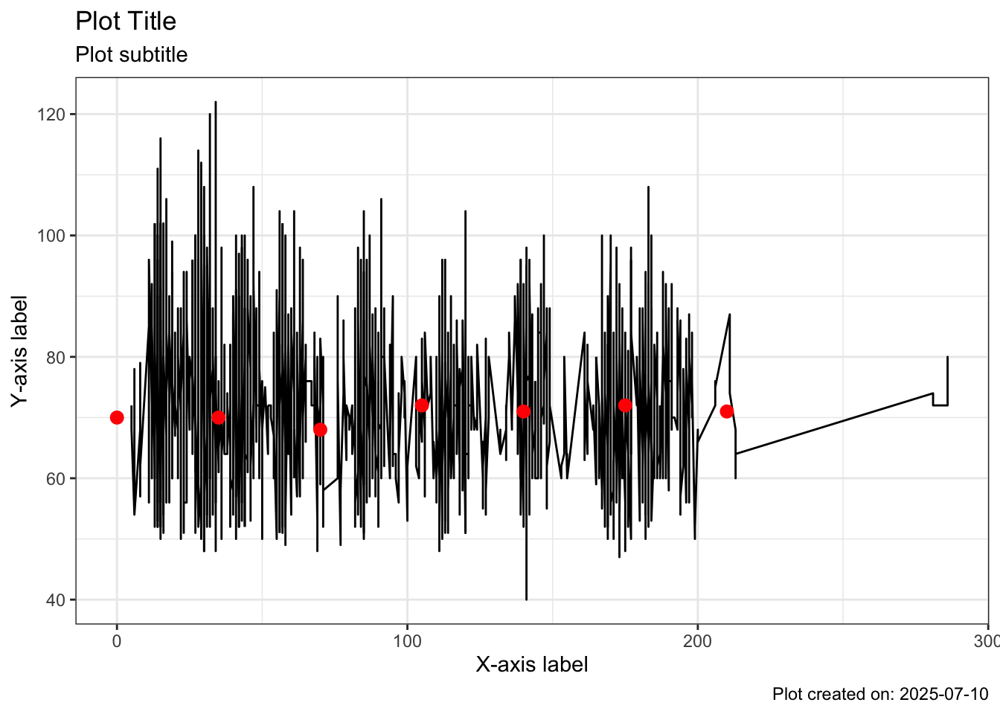
이 플롯은 새 데이터(여기서는 관심 있는 주를 선택한 원본 데이터)로 레이어를 추가하는 방법을 보여줍니다.
5.11 10. 축 범위
때로는 대부분의 데이터가 있는 플롯 영역을 “확대”하기 위해 플롯 축을 제한하고 싶을 때가 있습니다. scale_y_continuous(limits=c(50, 120))를 지정하면 50-120 범위를 벗어나는 점은 제거됩니다. coord_cartesian(ylim=c(50, 120))를 지정하면 특정 범위로 효과적으로 확대하는 것입니다. 해당 범위를 벗어나는 모든 값은 여전히 존재하며 회귀선/평활/중앙값에 영향을 미치지만 표시되지는 않습니다. 일반적으로 범위를 벗어나는 관측치를 잘라내고 제거하는 것보다 “확대”하는 것을 원할 것입니다.
plot4 +
coord_cartesian(ylim=c(50, 120))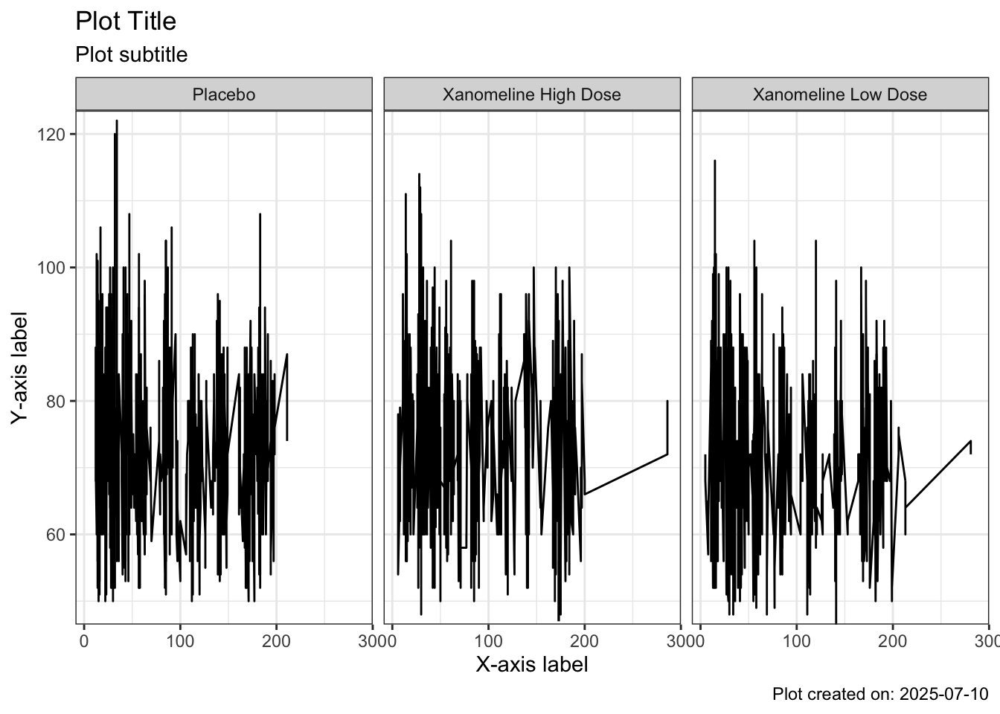
5.12 11. ggplot2 객체
plot4 객체를 더 자세히 살펴보겠습니다. RStudio IDE의 환경 탭을 사용하여 검사할 수 있습니다. 객체 오른쪽의 돋보기를 클릭하십시오. plot4는 ggplot 유형의 R 목록입니다. 그 안에는 데이터, 레이어, 스케일, 매핑, 테마, 좌표, 패싯, 레이블과 같은 요소가 표시됩니다. 즉, 언제든지 ggplot 객체에서 정보를 추출하여 사용할 수 있습니다.
RStudio IDE에서 목록의 요소를 보려면 환경 탭으로 이동한 다음 plot4 객체 왼쪽의 파란색 화살표를 클릭하십시오. 그러면 플롯에 대한 엄청난 양의 정보가 표시됩니다. 이는 R list 형식으로 포함된 플롯 속성입니다. 목록의 요소에 액세스하려면 <objectName>$<listItemName> 구문을 사용할 수 있습니다. plot4 객체의 mapping 요소를 살펴보겠습니다:
plot4$mappingAesthetic mapping:
* `x` -> `ADY`
* `y` -> `AVAL`이 정보에서 x 및 y 속성이 변수 이름 ADY 및 PARAM에 매핑되고 있음을 알 수 있습니다. 우리가 하고 싶은 것은 이러한 속성에서 변수 이름을 추출하여 플롯의 레이블을 결정하는 데 사용하는 것입니다.
프로그래밍에서 때로는 변수 이름을 사용하여 값이 포함된 열을 알려주고 싶을 때가 있고 때로는 해당 변수의 이름만 사용하고 싶을 때가 있습니다. 이 경우 이름만 사용하고 싶기 때문에 R에게 변수 “포인터”를 문자열로 바꾸라고 알려주어야 합니다. quo_name 함수를 사용하여 이 작업을 수행합니다. 나중에 미니 프로젝트에서 변수를 참조하고 함수에서 사용하는 방법을 더 자세히 살펴볼 것입니다.
아래 코드에서는 uniqueVal이라는 함수를 만들었습니다. 이 함수는 축 레이블에 사용할 수 있는 데이터셋 변수에서 정보를 추출하는 데 사용됩니다. 다시 말하지만, 향후 미니 프로젝트에서는 자신만의 함수를 만드는 것을 더 깊이 살펴볼 것입니다. 지금은 데이터셋에서 주어진 변수의 고유 값을 찾기 위해 함수를 작성했다는 점만 알아두십시오. 변수에 고유 값이 두 개 이상 포함되어 있지 않은지 확인하는 약간의 방어적 프로그래밍이 있습니다.
이러한 방식으로 문제에 접근함으로써 축 레이블을 “하드 코딩”하는 것을 피하고 다른 경우에 코드를 더 쉽게 재사용할 수 있습니다.
xLab <- quo_name(plot4$mapping$x)
yLab <- quo_name(plot4$mapping$y)
groupLab <- quo_name(plot4$mapping$group)
uniqueVal <- function(x){
if(length(unique(x))>1) simpleWarning(paste0("More than one value in column:",x))
unique(x)
}
study <- uniqueVal(plot4$data$STUDYID)
measure <- uniqueVal(plot4$data$PARAM)
xLab <- ifelse(xLab == "ADY", "Analysis Relative Day", xLab)
groupLab <- case_when(groupLab == "USUBJID" ~ "Subject",
groupLab == "TRTA" ~ "Treatment",
TRUE ~ groupLab)
plot4 +
labs(title = glue::glue("Study {study}"),
subtitle = glue::glue("Plot of {measure} by {groupLab}"),
x = xLab,
y = glue::glue("{measure}"))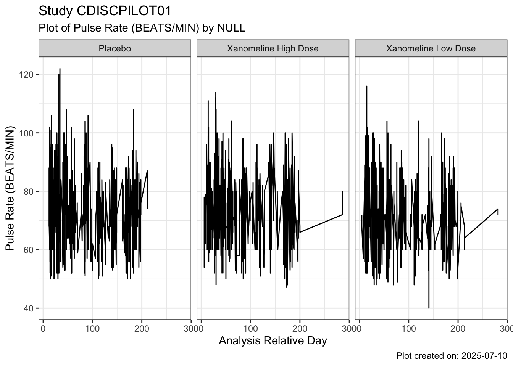
5.13 12. 데이터 변경
이제 영리한 부분입니다. {ggplot2}를 사용하면 플롯의 데이터셋을 변경하고 이전 플롯에서 속성을 상속할 수 있습니다. %+% 명령을 사용하여 이 작업을 수행합니다. %+%의 왼쪽에는 ggplot 유형의 객체가 있어야 하고 오른쪽에는 데이터셋 객체가 있어야 합니다.
그리고 위 코드를 사용하여 데이터 내 정보에서 플롯의 레이블을 “추측”하면 레이블이 자동으로 업데이트됩니다. 이상적으로는 레이블 추측 코드를 플롯 객체를 입력으로 받는 함수로 만드는 것이 좋지만 곧 함수에 대해 다룰 것입니다.
SysBP <- ADVS %>%
filter(PARAMN == 1) %>%
filter(VISITNUM > 3)
SysBP_plot <- plot4 %+%
SysBP
xLab <- quo_name(SysBP_plot$mapping$x)
yLab <- quo_name(SysBP_plot$mapping$y)
groupLab <- quo_name(SysBP_plot$mapping$group)
study <- uniqueVal(SysBP_plot$data$STUDYID)
measure <- uniqueVal(SysBP_plot$data$PARAM)
xLab <- ifelse(xLab == "ADY", "Analysis Relative Day", xLab)
groupLab <- case_when(groupLab == "USUBJID" ~ "Subject",
groupLab == "TRTA" ~ "Treatment",
TRUE ~ groupLab)
SysBP_plot +
labs(title = glue::glue("Study {study}"),
subtitle = glue::glue("Plot of {measure} by {groupLab}"),
x = xLab,
y = glue::glue("{measure}"))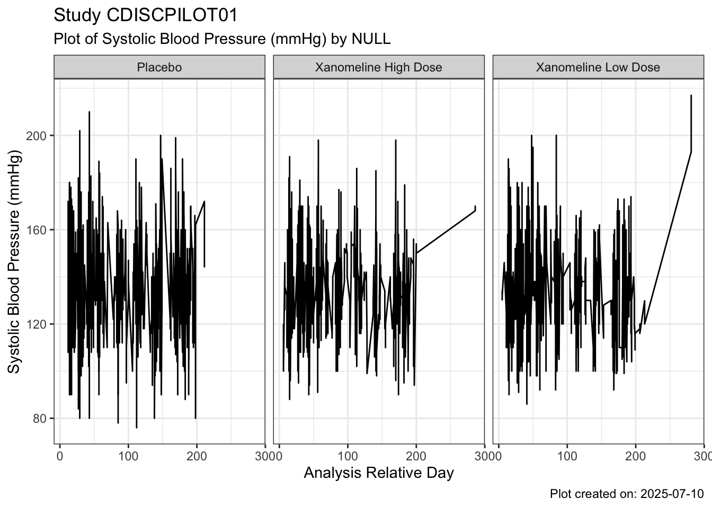
5.14 챌린지
이완기 혈압 및 체온에 대해 동일한 작업을 수행하십시오. 축 레이블이 사용된 데이터 유형과 일치하는지 확인하십시오.
새 엔드포인트에 대해 plot4를 업데이트하십시오.
5.15 추가 챌린지
VS 또는 ADVS 데이터셋 표준을 사용하는 다른 연구에서 활력 징후 데이터를 읽어옵니다. 새 데이터셋에 대한 맥박수 플롯을 생성할 때 (데이터 값을 사용하여 레이블을 결정하는 맥박수 플롯과 비교하여) 어떤 코드를 변경해야 합니까?
sessioninfo::session_info()─ Session info ───────────────────────────────────────────────────────────────
setting value
version R version 4.3.3 (2024-02-29)
os macOS 26.0
system aarch64, darwin20.0.0
ui unknown
language (EN)
collate C.UTF-8
ctype C.UTF-8
tz Asia/Seoul
date 2025-07-10
pandoc 3.6.3 @ /Users/fkt/Downloads/repo/pharma-hands-on-exercises/.pixi/envs/default/bin/ (via rmarkdown)
quarto 1.7.32 @ /Users/fkt/Downloads/repo/pharma-hands-on-exercises/.pixi/envs/default/bin/quarto
─ Packages ───────────────────────────────────────────────────────────────────
package * version date (UTC) lib source
cli 3.6.5 2025-04-23 [1] CRAN (R 4.3.3)
digest 0.6.37 2024-08-19 [1] CRAN (R 4.3.3)
dplyr * 1.1.4 2023-11-17 [1] CRAN (R 4.3.3)
evaluate 1.0.4 2025-06-18 [1] CRAN (R 4.3.3)
farver 2.1.2 2024-05-13 [1] CRAN (R 4.3.3)
fastmap 1.2.0 2024-05-15 [1] CRAN (R 4.3.3)
forcats * 1.0.0 2023-01-29 [1] CRAN (R 4.3.3)
generics 0.1.4 2025-05-09 [1] CRAN (R 4.3.3)
ggplot2 * 3.5.2 2025-04-09 [1] CRAN (R 4.3.3)
glue * 1.8.0 2024-09-30 [1] CRAN (R 4.3.3)
gtable 0.3.6 2024-10-25 [1] CRAN (R 4.3.3)
haven 2.5.4 2023-11-30 [1] CRAN (R 4.3.3)
hms 1.1.3 2023-03-21 [1] CRAN (R 4.3.3)
htmltools 0.5.8.1 2024-04-04 [1] CRAN (R 4.3.3)
htmlwidgets 1.6.4 2023-12-06 [1] CRAN (R 4.3.3)
jsonlite 2.0.0 2025-03-27 [1] CRAN (R 4.3.3)
knitr 1.50 2025-03-16 [1] CRAN (R 4.3.3)
labeling 0.4.3 2023-08-29 [1] CRAN (R 4.3.3)
lifecycle 1.0.4 2023-11-07 [1] CRAN (R 4.3.3)
lubridate * 1.9.4 2024-12-08 [1] CRAN (R 4.3.3)
magrittr 2.0.3 2022-03-30 [1] CRAN (R 4.3.3)
pillar 1.11.0 2025-07-04 [1] CRAN (R 4.3.3)
pkgconfig 2.0.3 2019-09-22 [1] CRAN (R 4.3.3)
purrr * 1.0.4 2025-02-05 [1] CRAN (R 4.3.3)
R.methodsS3 1.8.2 2022-06-13 [1] CRAN (R 4.3.3)
R.oo 1.27.1 2025-05-02 [1] CRAN (R 4.3.3)
R.utils 2.13.0 2025-02-24 [1] CRAN (R 4.3.3)
R6 2.6.1 2025-02-15 [1] CRAN (R 4.3.3)
RColorBrewer 1.1-3 2022-04-03 [1] CRAN (R 4.3.3)
readr * 2.1.5 2024-01-10 [1] CRAN (R 4.3.3)
rio * 1.2.3 2024-09-25 [1] CRAN (R 4.3.3)
rlang 1.1.6 2025-04-11 [1] CRAN (R 4.3.3)
rmarkdown 2.29 2024-11-04 [1] CRAN (R 4.3.3)
scales 1.4.0 2025-04-24 [1] CRAN (R 4.3.3)
sessioninfo 1.2.3 2025-02-05 [1] CRAN (R 4.3.3)
stringi 1.8.4 2024-05-06 [1] CRAN (R 4.3.3)
stringr * 1.5.1 2023-11-14 [1] CRAN (R 4.3.3)
tibble * 3.3.0 2025-06-08 [1] CRAN (R 4.3.3)
tidyr * 1.3.1 2024-01-24 [1] CRAN (R 4.3.3)
tidyselect 1.2.1 2024-03-11 [1] CRAN (R 4.3.3)
tidyverse * 2.0.0 2023-02-22 [1] CRAN (R 4.3.3)
timechange 0.3.0 2024-01-18 [1] CRAN (R 4.3.3)
tzdb 0.5.0 2025-03-15 [1] CRAN (R 4.3.3)
vctrs 0.6.5 2023-12-01 [1] CRAN (R 4.3.3)
withr 3.0.2 2024-10-28 [1] CRAN (R 4.3.3)
xfun 0.52 2025-04-02 [1] CRAN (R 4.3.3)
yaml 2.3.10 2024-07-26 [1] CRAN (R 4.3.3)
[1] /Users/fkt/Downloads/repo/pharma-hands-on-exercises/.pixi/envs/default/lib/R/library
* ── Packages attached to the search path.
──────────────────────────────────────────────────────────────────────────────